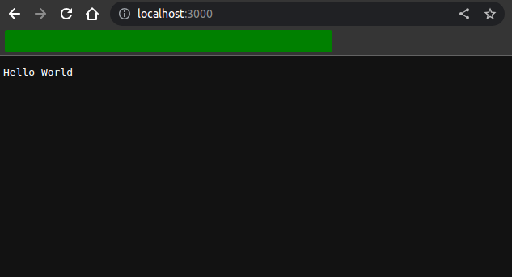
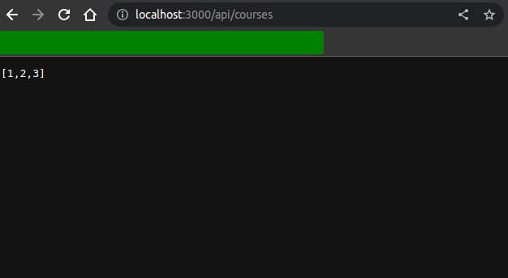

Modules#
What Are Modules?#
- So every file in a Node application is considered as a module. The variables and functions defined in that file or module are a scope to that file. In object oriented programming, terms we say they are private, they are not available outside that container, outside that module.
- If you want to use a variable or a function defined in a module, outside that module, you need to explicitly export it and make it public.
- In every Node application has at least one file or one module which we call the main module.
Create A Module#
- To create a module, we just simply create a js file, then we will need to use the
exportskeyword to tell NodeJs that the function can be used outside the module.
| logger.js | |
|---|---|
1 2 3 4 5 | |
Load A Module#
- To load a module, we will use the
requirekeyword.
| app.js | |
|---|---|
1 2 | |
- Then we will execute the app.js file by using command
node app.js. Then you can see the function oflogger.jshas been loaded successfully intoapp.jsand printed the message as below.
text message
Module Wrapper Function#
- In Node, each module is wrapped by a Module Wrapper Function, which provides a private scope for the module and adds certain variables and functions to it. This wrapper function is automatically applied by Node.js behind the scenes when executing a module.
- The Module Wrapper Function has the following structure:
1 2 3 | |
| Parameter | Description |
|---|---|
| exports | It is an object that represents the module's public interface. By assigning properties or methods to exports, you can make them accessible to other modules that require this module. |
| require | It is a function used to import other modules. You can use require to include external modules or other files within your project. |
| module | It is an object that represents the current module. It includes properties and methods related to the module, such as module.exports, which allows you to define the public interface of the module. |
__filename |
It is a string representing the absolute path of the current module file. |
__dirname |
It is a string representing the absolute path of the directory containing the current module file. |
- Here's an example to illustrate the Module Wrapper Function in action. Let's create a module named
math.jsthat exports a simple function for adding two numbers:
| math.js | |
|---|---|
1 2 3 4 5 6 7 8 | |
- When this module is executed, Node.js wraps it with the Module Wrapper Function:
1 2 3 4 5 6 7 8 9 10 11 12 | |
/home/user/study/nodejs-backend/udemy/modules/math.js
/home/user/study/nodejs-backend/udemy/modules
-
This wrapping allows the module to have its own private scope, preventing variables and functions from polluting the global scope. The
exportsobject allows you to define the module's public interface and expose functions or values that can be accessed by other modules usingrequire. -
By utilizing the Module Wrapper Function, Node.js provides a modular and encapsulated environment for building applications, allowing for better organization and reuse of code.
Core Modules#
NodeJscontains a lot of core modules that are built-in modules and we don't need to include any of them as external installations.- The table below show all core modules that we had by default.
| No. | Core Module | Description |
|---|---|---|
| 1 | assert | For performing assertions and writing tests. |
| 2 | async_hooks | For tracking asynchronous hooks. |
| 3 | buffer | For working with binary data using buffers. |
| 4 | child_process | For spawning child processes. |
| 5 | cluster | For creating child processes to take advantage of multi-core systems. |
| 6 | crypto | For cryptographic operations, such as hashing, encryption, and decryption. |
| 7 | dgram | For working with UDP (User Datagram Protocol) datagrams. |
| 8 | dns | For working with DNS (Domain Name System) operations. |
| 9 | domain | For handling uncaught exceptions in a more controlled manner. |
| 10 | events | For implementing event-driven architecture, creating and handling custom events. |
| 11 | fs (File System) | For interacting with the file system, reading and writing files, and working with directories. |
| 12 | http | For creating HTTP servers and clients, handling HTTP requests, and responses. |
| 13 | https | Similar to the http module but for secure HTTPS connections. |
| 14 | http2 | For creating HTTP/2 servers and clients. |
| 15 | net | For creating TCP servers and clients, and handling network connections. |
| 16 | os (Operating System) | Provides information about the operating system, including CPU, memory, network interfaces, etc. |
| 17 | path | For working with file and directory paths, parsing, and manipulation. |
| 18 | perf_hooks | For performance monitoring and hooking. |
| 19 | punycode | For converting between Unicode and Punycode representations of domain names. |
| 20 | querystring | For parsing and formatting URL query strings. |
| 21 | readline | For reading input streams line by line. |
| 22 | repl | For implementing a Read-Eval-Print-Loop (REPL) environment. |
| 23 | stream | For working with streams of data, allowing efficient handling of large datasets. |
| 24 | string_decoder | For decoding buffer objects into strings. |
| 25 | tls | For working with TLS/SSL (Transport Layer Security/Secure Sockets Layer) encrypted connections. |
| 26 | trace_events | For working with trace events in the V8 engine. |
| 27 | tty | For interacting with terminal devices. |
| 28 | url | For working with URL parsing and formatting. |
| 29 | util | Contains utility functions that are helpful for various tasks, such as inheritance, formatting, and debugging. |
| 30 | v8 | For accessing V8 engine information and statistics. |
| 31 | vm | For running JavaScript code in a virtual machine context. |
| 32 | worker_threads | For creating and interacting with worker threads. |
| 33 | zlib | For compressing and decompressing data using the zlib library. |
- Now, we will check some main core modules that we will usually use in Node applications.
Path Module#
-
The
pathmodule is one of the core modules in Node.js, and it provides utilities for working with file and directory paths. It is used to handle and manipulate file and directory paths in a cross-platform manner, making it easier to write platform-independent code for file-related operations. -
The
pathmodule offers various methods to interact with file paths, such as joining paths, resolving paths, extracting information about paths, and more. This is particularly useful when dealing with file system operations and building file paths dynamically. -
To use the
pathmodule, you don't need to install anything separately, as it comes built-in with Node.js. To include the module in your code, you can require it like this:
1 | |
- Example in using
pathmodule.
| path.js | |
|---|---|
1 2 3 4 5 6 7 8 9 10 11 12 13 14 15 16 17 | |
- All methods of
pathmodule are showed as in the table below.
| Method | Description |
|---|---|
path.join([...paths]) |
Joins path segments together using the platform-specific separator. Automatically handles differences in separators between operating systems. |
path.resolve([...paths]) |
Resolves an absolute path based on the given path segments. Returns the absolute path of the specified file or directory, relative to the current working directory. |
path.isAbsolute(path) |
Determines if the given path is an absolute path (starts with a drive letter on Windows or / on Unix-based systems). |
path.relative(from, to) |
Returns the relative path from from to to based on the current working directory. |
path.dirname(path) |
Returns the directory name of a given path. |
path.basename(path, [ext]) |
Extracts the last portion of a path (file name) from the provided path. Optionally, you can specify an extension to remove it from the result. |
path.extname(path) |
Extracts the file extension from a path and returns it. |
path.parse(path) |
Parses a path string and returns an object with properties representing the different parts of the path (root, dir, base, name, ext). |
path.normalize(path) |
Normalizes a path by removing any unnecessary separators and resolving relative path segments. |
OS Module#
-
The
osmodule is one of the core modules in Node.js, and it provides various utilities for interacting with the operating system. It allows developers to access information about the underlying operating system, such as system architecture, platform, network interfaces, and more. -
To use the
osmodule, you don't need to install anything separately, as it comes built-in with Node.js. To include the module in your code, you can require it like this:
1 | |
- Example in using
pathmodule.
| os-module.js | |
|---|---|
1 2 3 4 5 6 7 8 9 10 11 12 13 14 15 16 17 | |
For JavaScript we can't get those information because the JavaScript is run only on browsers and it can only information about windows or document objects it can't information about operating system. For NodeJs, it runs outside the browser so we can get those information and work with files, os, networks, etc.
- All methods of
pathmodule are showed as in the table below.
| Method | Description |
|---|---|
os.arch() |
Returns the CPU architecture of the operating system. |
os.cpus() |
Returns an array of objects containing information about each CPU core, such as model, speed, and times. |
os.endianness() |
Returns the endianness of the CPU. It can be either "BE" (big-endian) or "LE" (little-endian). |
os.freemem() |
Returns the amount of free system memory in bytes. |
os.totalmem() |
Returns the total amount of system memory in bytes. |
os.homedir() |
Returns the home directory of the current user. |
os.hostname() |
Returns the hostname of the operating system. |
os.loadavg() |
Returns an array containing the average load of the system for the last 1, 5, and 15 minutes. |
os.networkInterfaces() |
Returns an object with information about the network interfaces available on the system. |
os.platform() |
Returns the platform name of the operating system (e.g., 'win32', 'darwin', 'linux', etc.). |
os.release() |
Returns the release version of the operating system. |
os.tmpdir() |
Returns the temporary directory path. |
os.type() |
Returns the operating system name (e.g., 'Windows_NT', 'Darwin', 'Linux', etc.). |
os.uptime() |
Returns the uptime of the system in seconds. |
os.userInfo([options]) |
Returns information about the current user. The optional options parameter can be used to specify the username to retrieve information for a specific user. |
os.constants |
An object containing various operating system-specific constants used by Node.js. |
os.EOL |
A string constant representing the end-of-line marker for the current operating system. |
os.arch() |
Returns the CPU architecture of the operating system. |
os.EOL |
A string constant representing the end-of-line marker for the current operating system. |
File System Module#
-
The file system module in Node.js, often referred to as the
fsmodule, is one of the core modules that provides an API for working with the file system. It allows you to interact with the file system on your computer and perform various operations such as reading, writing, updating, and deleting files and directories. -
To use the
fsmodule, you don't need to install anything separately, as it comes built-in with Node.js. To include the module in your code, you can require it like this:
1 | |
- Example in using
pathmodule.
| file-system.js | |
|---|---|
1 2 3 4 5 6 7 8 9 10 11 12 13 14 15 16 17 18 19 20 | |
- All methods of
filemodule are listed as in the table below:
| Method | Description |
|---|---|
fs.access(path[, mode], callback) |
Asynchronously checks if the file or directory is accessible with the specified mode. |
fs.appendFile(path, data[, options], callback) |
Asynchronously appends data to a file, creating the file if it does not exist. |
fs.chmod(path, mode, callback) |
Asynchronously changes the permissions of a file or directory. |
fs.chown(path, uid, gid, callback) |
Asynchronously changes the ownership of a file or directory. |
fs.close(fd, callback) |
Asynchronously closes a file descriptor. |
fs.copyFile(src, dest[, flags], callback) |
Asynchronously copies a file. |
fs.createReadStream(path[, options]) |
Creates a readable stream to read data from a file. |
fs.createWriteStream(path[, options]) |
Creates a writable stream to write data to a file. |
fs.unlink(path, callback) |
Asynchronously deletes a file. |
fs.unlinkSync(path) |
Synchronously deletes a file. |
fs.existsSync(path) |
Synchronously checks if a file or directory exists. |
fs.ftruncate(fd, len, callback) |
Asynchronously truncates a file to the specified length. |
fs.futimes(fd, atime, mtime, callback) |
Asynchronously changes the file access and modification times. |
fs.lchmod(path, mode, callback) |
Asynchronously changes the permissions of a symbolic link. |
fs.lchown(path, uid, gid, callback) |
Asynchronously changes the ownership of a symbolic link. |
fs.link(existingPath, newPath, callback) |
Asynchronously creates a new hard link. |
fs.lstat(path, callback) |
Asynchronously gets the status of a symbolic link. |
fs.mkdir(path[, options], callback) |
Asynchronously creates a directory. |
fs.mkdtemp(prefix[, options], callback) |
Asynchronously creates a unique temporary directory. |
fs.open(path, flags[, mode], callback) |
Asynchronously opens a file. |
fs.read(fd, buffer, offset, length, position, callback) |
Asynchronously reads data from a file. |
fs.readdir(path[, options], callback) |
Asynchronously reads the contents of a directory. |
fs.readFile(path[, options], callback) |
Asynchronously reads the contents of a file. |
fs.readlink(path[, options], callback) |
Asynchronously reads the value of a symbolic link. |
fs.realpath(path[, options], callback) |
Asynchronously resolves the real path of a file or directory. |
fs.rename(oldPath, newPath, callback) |
Asynchronously renames a file or directory. |
fs.rmdir(path, callback) |
Asynchronously removes a directory. |
fs.stat(path[, options], callback) |
Asynchronously gets the status of a file or directory. |
fs.symlink(target, path[, type], callback) |
Asynchronously creates a symbolic link. |
fs.truncate(path, len, callback) |
Asynchronously truncates a file to the specified length. |
fs.unlink(path, callback) |
Asynchronously deletes a file. |
fs.unwatchFile(filename[, listener]) |
Stops watching for changes on a file. |
fs.utimes(path, atime, mtime, callback) |
Asynchronously changes the file access and modification times. |
fs.watch(filename[, options][, listener]) |
Watches for changes in a file or directory. |
fs.write(fd, buffer[, offset[, length[, position]]], callback) |
Asynchronously writes data to a file. |
fs.writeFile(file, data[, options], callback) |
Asynchronously writes data to a file, replacing the file if it already exists. |
Events Module#
- Event is a signal that indicates that something has happened in our application.
-
The
eventsmodule in Node.js is one of the core modules that provides an implementation of theEventEmitterclass. This module allows developers to work with and create custom events and event-driven architectures in Node.js applications. -
The
EventEmitterclass in theeventsmodule is the foundation for working with events in Node.js. It provides methods to register event listeners, emit events, and handle event emissions asynchronously. This event-driven paradigm is a fundamental concept in Node.js, allowing non-blocking and asynchronous execution of code. -
To use the
eventsmodule, you don't need to install anything separately, as it comes built-in with Node.js. To include the module in your code, you can require it like this:
1 | |
- Example in using
eventsmodule.
| events.js | |
|---|---|
1 2 3 4 5 6 7 8 9 10 11 12 13 14 15 16 | |
- As you can see in the code above, we will listener an event name
messageLoggedand when the eventmessageLoggedis emitted then the callback function will be executed in the listener.
Note: In the js file we should not put registering a listener below the emitting event because when the code is executed the event is emitted but there are no listeners registered for listenning.
- All methods of
eventsmodule are listed as in the table below:
| Method | Description |
|---|---|
addListener(event, listener) |
Adds a listener for the specified event. |
on(event, listener) |
Same as addListener. |
once(event, listener) |
Adds a one-time listener for the specified event. The listener will be removed after it is called once. |
removeListener(event, listener) |
Removes a listener for the specified event. |
off(event, listener) |
Same as removeListener. |
removeAllListeners([event]) |
Removes all listeners for the specified event. If no event is provided, it removes all listeners for all events. |
setMaxListeners(n) |
Sets the maximum number of listeners that can be added to an event. Default is 10. |
getMaxListeners() |
Returns the maximum number of listeners that can be added to an event. |
listeners(event) |
Returns an array of listeners for the specified event. |
rawListeners(event) |
Returns a copy of the array of listeners for the specified event, including any wrappers (e.g., once wrappers). |
emit(event, [arg1], [arg2], [...]) |
Synchronously calls each of the listeners registered for the specified event. |
eventNames() |
Returns an array of event names for which listeners have been registered. |
listenerCount(event) |
Returns the number of listeners currently registered for the specified event. |
Event Arguments#
- When we raise an event, we also need to send some data about that event and these data called event arguments. We can send multi arguments in an event.
1 | |
- However, there is best practice to encapsulate these arguments inside an object
1 | |
- Example in using
event argument.
| event-arguments.js | |
|---|---|
1 2 3 4 5 6 7 8 9 10 11 12 13 14 | |
Extending Event Emitter#
-
Okay, in the real world we will not working directly with the
EventEmitterand in every case we also don't need to import and create new instance ofEventEmitterinstead we will create a class that has all the capabilities of theEventEmitterbut it has additional capabilities. -
Let's take an example, we will create 2 js files.
event-sender.jsandevent-app. In which, in thesender.jswe will create a classSenderwhich extend theEventEmitterand theevent-appwill import and use theSenderclass for emitting and listening events.
| event-sender.js | |
|---|---|
1 2 3 4 5 6 7 8 9 10 11 12 13 14 15 16 | |
| event-app.js | |
|---|---|
1 2 3 4 5 6 7 8 9 10 | |
//Result
eventName is: messageLogged
{ name: 'John', age: 50 }
Listener called { name: 'John', age: 50 }
HTTP Module#
-
The
httpmodule in Node.js is one of the core modules that provides an implementation of the HTTP (Hypertext Transfer Protocol) server and client. It allows developers to create web servers, make HTTP requests, and handle HTTP responses. The HTTP module is actually built base on theEventEmittermodule. -
The
httpmodule enables Node.js applications to act as web servers, serving HTTP content to clients (web browsers, other applications, etc.) and handling incoming HTTP requests. It also allows applications to make HTTP requests to external servers and consume data from APIs or other web services. -
To use the
httpmodule, you don't need to install anything separately, as it comes built-in with Node.js. To include the module in your code, you can require it like this:
1 | |
- Example in using
httpmodule.
| http-module.js | |
|---|---|
1 2 3 4 5 6 7 8 9 10 11 12 13 14 15 16 17 18 19 20 21 22 23 24 | |


Node: In the real world, we will not use this way to build a back-end application service because the callback function
http.createServerwill become more and more complex if we have many routes . We will use another library such as Tech/NodeJs/ExpressJS to handle these things.
- All methods of
httpmodule are listed as in the table below:
| Method | Description |
|---|---|
http.createServer([options][, requestListener]) |
Creates an HTTP server that can listen for incoming HTTP requests and handle them. |
http.get(options[, callback]) |
Sends an HTTP GET request to the specified URL and receives the response. |
http.request(options[, callback]) |
Sends an HTTP request to the specified URL and receives the response. |
http.STATUS_CODES |
An object containing standard HTTP status code strings as properties. |
http.METHODS |
An array of valid HTTP methods (e.g., 'GET', 'POST', 'PUT', etc.). |
http.Agent |
A class representing an HTTP Agent, allowing connection pooling and reusing sockets. |
http.globalAgent |
The default global HTTP Agent used for making HTTP requests. |
http.createServer() |
An alias for http.createServer([options][, requestListener]). |
http.get(url[, options][, callback]) |
An alias for http.get(options[, callback]). |
http.request(url[, options][, callback]) |
An alias for http.request(options[, callback]). |
http.createServer([requestListener]) |
An alias for http.createServer([options][, requestListener]). |
http.get(url[, options][, callback]) |
An alias for http.get(options[, callback]). |
http.request(url[, options][, callback]) |
An alias for http.request(options[, callback]). |
http.getAgent(options) |
Creates a new HTTP Agent based on the provided options. |